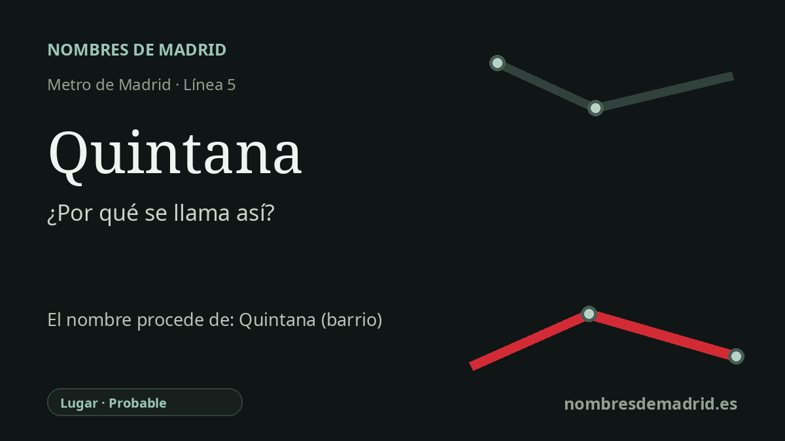

Publicado el · Investigación de Nombres de Madrid · Cómo verificamos cada origen · 8 fuentes consultadas
Respuesta rápida
La estación de Quintana toma su nombre de la plaza de Quintana, donde se sitúa en Ciudad Lineal. El origen más profundo probablemente está en el antiguo topónimo Barrio o Quinta de la Quintana, no en una dedicatoria documentada con seguridad al poeta Manuel José Quintana.
La historia del nombre
La estación de Quintana toma su nombre del lugar situado justo encima: la plaza de Quintana, una localización oficial del Ayuntamiento de Madrid en la calle de Alcalá 339, dentro del barrio de Quintana del distrito de Ciudad Lineal. La documentación municipal y patrimonial sitúa la estación en esa plaza, de modo que el origen directo del nombre ferroviario es claro, aunque el origen profundo del topónimo exige más cautela.
La capa histórica mejor respaldada es local, no biográfica. Los inventarios municipales de suelo describen repetidamente parcelas de Ciudad Lineal situadas entre la finca llamada "Quinta de la Quintana" y el arroyo Calero. Además, una historia parroquial del antiguo Canillas incluye el "Barrio de la Quintana" entre los ámbitos existentes antes de la anexión de Canillas a Madrid en 1949. Esto hace que una finca, paraje o barrio de nombre Quintana sea la raíz más probable de la plaza y de la estación actuales.
La cronología encaja con la historia urbana del este de Madrid. Antes de quedar plenamente absorbida por la ciudad de posguerra, esta zona pertenecía al entorno de Canillas y se articulaba alrededor de la antigua carretera hacia Aragón, la actual calle de Alcalá. En los años cincuenta y sesenta se consolidaron los barrios residenciales cercanos, y el metro llegó con la prolongación Ventas-Ciudad Lineal en 1964. La estación pasó después a integrarse en la línea 5 el 20 de julio de 1970.
Existe una explicación alternativa tentadora: Manuel José Quintana y Lorenzo, poeta madrileño, político liberal, educador, senador y preceptor real, fue una figura destacada del siglo XIX y da nombre a calles en otros lugares. La Real Academia de la Historia lo identifica como ministro, poeta, filólogo, periodista y senador, y su coronación pública como poeta nacional en 1855 es un hecho real de su biografía. Pero eso no prueba por sí solo que esta plaza concreta de Ciudad Lineal llevara su nombre por él.
La interpretación mejor respaldada es por tanto: Quintana se llama así por la plaza de Quintana, cuyo nombre probablemente continúa un topónimo local anterior, el Barrio o la Quinta de la Quintana. La explicación basada en Manuel José Quintana debe marcarse como no verificada hasta localizar un expediente municipal de nomenclátor, acuerdo de denominación o entrada histórica de callejero que lo confirme. La palabra española "quintana" tiene además un origen latino real, pero ese dato lingüístico sirve como contexto del topónimo, no como prueba directa de la denominación de la estación.